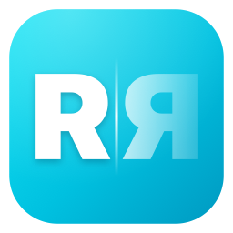

Conectando…
Toque para entrar em tela cheia
Toque para controlar: 1 dedo = clique · 2 dedos = clique direito · arrastar = rolar · segurar e arrastar = arrastar · 3 dedos = estatísticas
Para tirar as barras do navegador, adicione à Tela de Início (Safari: Compartilhar → Adicionar à Tela de Início · Chrome: ⋮ → Adicionar à tela inicial).